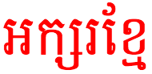

This page provides basic information about the Khmer script. It is not authoritative, peer-reviewed information – these are just notes I have gathered or copied from various places as I learned. For character-specific details follow the links to the Khmer character notes.
Clicking on red text examples, or highlighting part of the sample text shows a list of characters, with links to more details. Click on the vertical blue bar (bottom right) to change font settings for the sample text.
The Khmer script is an abugida, descended from the Brahmic script Pallava. It is used for writing Khmer, the official language of Cambodia. The script is also sometimes used for writing minority languages in Cambodia, such as Brao and Mnong.
The Khmer literary tradition dates back to the 7th century, and the script is currently in widespread use, although it is estimated that 35% of the Khmer-speaking population aged 15 and over are illiterate in the script.
The Khmer alphabet or Khmer script (Khmer: អក្សរខ្មែរ; IPA: [ʔaʔsɑː kʰmaːe]) is an abugida (alphasyllabary) script used to write the Khmer language (the official language of Cambodia). It is also used to write Pali in the Buddhist liturgy of Cambodia and Thailand.
It was adapted from the Pallava script, which ultimately descended from the Brahmi script, which was used in southern India and South East Asia during the 5th and 6th centuries AD. The oldest dated inscription in Khmer was found at Angkor Borei District in Takéo Province south of Phnom Penh and dates from 611. The modern Khmer script differs somewhat from precedent forms seen on the inscriptions of the ruins of Angkor. The Thai and Lao scripts are descended from an older form of the Khmer script.
Distinctive features
The script is an abugida, ie. like most Brahmi-influenced scripts, each consonant carries with it an inherent vowel. The sound following a consonant can be modified by attaching vowel signs to the consonant when writing. See the table to the right for a brief overview of features, taken from the Script Comparison Table.
Direction of text is horizontal, left to right. However, glyphs constituting a single syllable can appear on any side of the base character, and multiple diacritics are often needed to create the vowel in a syllable.
A key feature of Khmer is that there are a large number of vowel sounds, and only a few vowel signs; and there are a large number of consonant letters for only a small number of consonant sounds. This lead to a system where there are generally two consonant signs for a given sound, each belonging to one of two classes (or registers). So to determine the pronunciation of a vowel sign you start by seeing which class of consonant it follows. For example, using the two symbols for the sound k, ក is kɑːneck, and គ is kɔːmute.
Consonants stack in Khmer, but not always in a predictable way. Multiple consonants at the start and (sometimes) end of a syllable are usually stacked. Consonant clusters in a multisyllabic word also tend to stack. But syllable-final consonants, which can be one of a number of characters, often don't stack with the onset consonant of the next syllable.
There are two distinct styles of font in Modern Khmer: slanted (called អក្សរច្រៀង), which has an upright variant, and round (called អក្សរឈរ). The round style includes more ligated forms. The upright style is used here. Style examples: slanted upright អក្សរ ខ្មែ, round អក្សរ ខ្មែ.
Show transcriptions
Character lists by language
The Khmer script characters in Unicode 10.0 are in the following blocks:
Khmer(54 letters, 33 marks, 20 numbers, 6 punctuation, 1 symbol : total 114)
Follow these links for information about characters used by languages associated with this script. The numbers in parentheses refer to non-ASCII characters.
Many native Cambodian words are monosyllabic. These start with one or more consonants or an independent vowel (or a vowel sign attached to ʔɑː, which is a combination of both). Short vowels in stressed syllables are always followed by a consonant. Long vowels may not be. There are many monosyllabic words that begin with consonant clusters, and some monosyllabic words that end with clusters, although only one consonant is pronounced in syllable final position.
There are also many bisyllabic words. In many cases the first syllable in a bisyllabic word is unstressed, and the vowel is usually rendered in colloquial speech as a schwa. Some bisyllabic words are compounds, however, and this may not apply.
Polysyllabic words are usually of Sanskrit, Pali or French origin. These words tend to alternate stress across their syllables, but may not.
Order of syllable components
An orthographic syllable is slightly different from a morphological syllable, since an orthographic syllable may begin with the final consonant of the previous morphological syllable. Alternatively, an orthographic syllable may be just a final consonant or consonant cluster in a morphological syllable.
Usage tip:
Components of an 'orthographic syllable'* should be composed in the following order:
base consonant or independent vowel
rɔɓaːt
museʔkətoə̯n or trəisaɓ (register shifters)
subscript (consonant or independent vowel)
vowel sign
zero-width joiner or non-joiner
any other mark
This fixed ordering makes it easier to search for and collate text.
As mentioned above, although all combining characters follow the base in memory, the visual order of syllable components may not follow a linear progression from left to right. In the following example the order in which the glyphs are pronounced is far left, far right, down, left, left: កន្ត្រៃkɑntrajscissors. Here ច្រៀង the spoken order of the separate visible parts, numbered left to right, is 3,2, 1+4, 5, Some vowel signs span two or three sides of the base consonant or cluster.
Consonants
The Khmer block has 35 consonants. The list just below shows those in use in modern Khmer, although some are not widely used. The phonetic transcriptions below show the sound of the consonant in syllable initial (left) and final (right) positions.
Each consonant letter is pronounced with an inherent vowel by default.
list all 33
កkɑː, kʰ- -kkkâ
ខkʰɑː, k- -kkʰkhâ
គkɔː, kʰ- -kḵkô
ឃkʰɔː, k- -kḵʰkhô
ងŋɔː, -ŋŋngô
ចcɑː, -ccchâ
ឆcʰɑːcʰchhâ
ជcɔː, -cc̱chô
ឈcʰɔːc̱ʰchhô
ញɲɔː, -ɲɲnhô
ដɗɑː, -tɗdâ
ឋtʰɑː, t- -tṫʰthâ
ឌɗɔː, -tɗ̱dô
ឍtʰɔː, -tṯ̇ʰthô
ណnɑː, -nnnâ
តtɑː, ɗ- t- -tttâ
ថtʰɑː, t- -ttʰthâ
ទtɔː, -tṯtô
ធtʰɔː, t- -tṯʰthô
នnɔː, -nṉnô
បɓɑː, p- -pbbâ
ផpʰɑː, p- -ppʰphâ
ពpɔː, -pp̄pô
ភpʰɔː, p- -pp̄ʰphô
មmɔː, -mm̱mô
យjɔː, -iːȳyô
រrɔː, -∅ṟrô
ឡlɑːllâ
លlɔː, -lḻlô
វʋɔː, -wv̱vô
សsɑː, s- -hssâ
ហhɑː, ∅-hhâ
អʔɑːʔ’â
The following two consonants are obsolete.
list both
ឝɕś
ឞʂṣ
Consonant registers
Khmer is not tonal, but each consonant character belongs to one of two classes. The class of a consonant determines the vowel sound in a syllable. For example, កkɑː vs. គkɔː, and កីkəj vs. គីkiː.
Two diacritics, ៉[U+17C9 KHMER SIGN MUUSIKATOAN] and ៊[U+17CA KHMER SIGN TRIISAP], are used to change the class of a consonant. These are particularly useful when a given sound has only one character associated with it, such as the letters ម, យ and ស etc.
Subscript consonants
It is common to find clusters of consonants with no intervening vowel sounds. Since words are not separated by spaces, clusters can appear at word boundaries as well as word-internally.
In Khmer, word-internation clusters are very common at the beginning of a word, but clusters also occur medially in multisyllable words, and occasionally at the end of a word.
Khmer doesn't do anything special with clusters at word boundaries, however word-internal clusters usually lead to some stacking behaviour.
When two consonants occur together without an intervening vowel, the second is rendered in subscript form, called ជើងអក្សរcəːŋʔɑʔsɑː (consonant feet) (or 'coeng', pronounced cəːŋ). Cambodians see these subscripts as distinct letter forms.
In Unicode subscript forms are produced by inserting ្[U+17D2 KHMER SIGN COENG] before the consonant that will become a subscript. This character, which has no visual form in Cambodian, is called the coeng in Unicode, although it should rightly be called the coeng generator.
Where the two consonants involved in the cluster are in different classes or registers, the pronunciation of any following vowel is normally determined by the register of the subscript consonant. For the following exceptions, however, the vowel pronunciation is determined by the register of the first consonant:
list all
ង
ញ
ន
ម
យ
រ
ល
វ
Some subscripts change the sound of the preceding consonant.
Subscript consonants that appear at the end of a word, are silent, eg. ពេទ្យpeit; រដ្ឋroat.
In some multisyllabic words a medial cluster may contain a final consonant for the first syllable and the initial consonant of the next syllable, eg. កម្មករ kɑmmɔkɑːworker .
There are some clusters involving two subscripts. These are, with three exceptions, composed of a final nasal, followed by a stop and r, eg. កន្ត្រៃkɑntrajscissors, កញ្ជ្រេងkɑɲcreːŋfox. The three exceptions are the loan words, អង្គ្លេសʔɑŋkleːhEnglish, សងស្ក្រិតsɑŋskretSanskrit, and សាស្ត្រាចារ្យsɑstraːcaːteacher.
Subscript consonants after vowels
It is rare but possible to find subscripts used after independent vowels. One common word spelled this way is ឲ្យʔaojto give.
It is also possible to find subscript forms of independent vowels. Four of these are named sequences in Unicode.
Final consonants
Not all Khmer consonants can appear in syllable-final position. The most common syllable-final consonants include the following:
list all
កk
ងŋ
ញɲ
តt
នn
បp
មm
លl
The pronunciation of the consonant in final position may differ from it's normal pronunciation, but it is not followed by a vowel sound.
Because ordinary letters are used in word-final position, it is difficult to parse Khmer. For example, the sequence កក could equally represent two syllables with inherent vowels, or one syllable with a final -k sound.
Two final consonants (m and h) can also be produced using combining characters. See anusvara_visarga for details.
Vowels
The Khmer Unicode block has 16 vowel signs, and 15 independent vowels (not counting 2 that are deprecated).
Other diacritics also produce vowel sounds after or before the consonants they are attached to.
As mentioned above, an initial indicator of pronunciation is the class of the syllable-initial consonant. Additional factors include whether this is an unstressed vowel, vowel harmony, and whether any of the special diacritics have been used to change the sound. For an in-depth treatment of pronunciation see Huffman in the sources section.
Inherent vowels
Each consonant symbol has an inherent following vowel sound, typically transcribed as a.
Khmer has two inherent vowels, ɑː and ɔː. The class of the consonant will initially dictate which sound is appropriate, eg. កkɑː vs. គkɔː.
Inherent vowels are not pronounced after syllable final consonants, nor after initial consonants in a stack.
Vowel signs
To produce a different vowel than the inherent one, Khmer uses one or more combining characters, called vowel-signs, after the base consonant.
As mentioned above, in most cases, vowel signs attached to a consonant are pronounced differently, depending on the register of the consonant letter, eg. កាkaː vs. គាkiə.
list all 17
ាaː, iəāā
ៈaʔ, eə̆ʔa
ិə, e ɨ iii
ីəj, iːīī
ឹə, ɨɨẏ
ឺəɨ, ɨːɨ̄ȳ
ុo, uuu
ូou, uːūū
េei, eːee
ែae, ɛːæae
ៃaj, ɨjaʲai
ោao, oːoo
ៅaw, ɨwaʷau
ួuəuᵊua
ើaə, əːaᵊoe
ឿɨəɨᵊẏa
ៀiəiᵊia
ៈ [U+17C8 KHMER SIGN YUUKALEAPINTU] is a 20th century addition to the Khmer repertoire. It is used as a vowel after consonants that are pronounced as stressed syllables at the end of a word, or preceding an internal juncture in compounds.
Several vowel characters are composed of parts that are visually separate, eg. the sound aw/əː is represented as ើ[U+17BE KHMER VOWEL SIGN OE].
Independent vowels
There are two ways of representing vowel sounds that are not preceded by a consonant.
The most common way is to add a vowel-sign to the character អ[U+17A2 KHMER LETTER QA], eg. អីʔəj.
There are also some independent vowel letters, but unlike most South Asian scripts, there are fewer independent vowels than vowel signs, and some do not have direct correspondances with a vowel sign, eg. ឪ corresponds phonetically to the vowel plus consonant combination ូវ. (See also vocalics.)
list all 10
ឥʔə, ʔɨ ʔəjịi
ឦʔəjị̄ī
ឪʔəwɨ̣ýu
ឧʔo, ʔu ʔaoụu
ឩou, ʔuːụ̄ū
ឯʔae, ʔɛː ʔeːæ̣ae
ឰʔajạʲai
ឱʔaoọo
ឳʔawạʷau
ឲʔaoạᵒâu
Whether an independent vowel sound is represented using an independent vowel sign or the glottal consonant plus vowel sign varies from word to word. In Cambodian orthography the two are not interchangeable. The independent vowel signs appear in relatively few words, but some of those words are quite common, eg. ឪពុកʔəwpukfather, ឲ្យʔaojto give and ឮlɨːto hear.
Vocalics
A set of letters that represents a special combination of consonant+vowel, available in Khmer only as independent vowels.
list all 4
ឫra~rur̥ₔ
ឬraː~ruːr̥̄ₔ
ឭla~lul̥ₔ
ឮlaː~luːl̥̄ₔ
Vowel-like diacritics
Two diacritics can behave like vowel-signs in Khmer.
list both
ំmṃ
ះhḥ
The descendants of the anusvara and the visarga, ំ [U+17C6 KHMER SIGN NIKAHIT], called និគ្គហិតniʔkəhət, and ះ [U+17C7 KHMER SIGN REAHMUK], called រះមុខreə̆hmuk, are regarded as vowels in Khmer, even though their sounds still end with ŋ and h, respectively.
They are also used in combination with other vowel signs to produce common vowel sounds.
list all
ាំam, oə̆m
ុំom, um
ុះoh, uh
េះeh, ih
ោះɑh, uə̆h
The first two of these combinations are regarded as vowels in the Khmer alphabet but they are not encoded separately in Unicode (though they are named sequences), ie. អាំam, oə̆m and អុំom, um.
Vowel harmony
In two-syllable words, where the second syllable begins with one of the following consonants the vowel class of the second syllable is the same as that of the first.
list all
ង
ញ
ណ
ន
ម
យ
ឡ
ល
រ
វ
For example, in ប្រយ័ត្នprɑjatto be careful, the second syllable starts with an oː class consonant but the class of the preceding syllable turns the vowel to an ɑː class sound. There are, however, exceptions to this rule.
Combining characters
The Khmer block contains 33 combining marks, 16 of which are vowel-signs, and 3 vowel-like signs – these are described above. Two deprecated inherent vowel marks, and one astrological mark who's use is discouraged, bring the remaining total to 11.
Other diacritics are described here in general terms. For the detail, click on the character above and follow the links to the character notes document.
Silencing marks
Two diacritics, ៌ [U+17CC KHMER SIGN ROBAT] and ៍ [U+17CD KHMER SIGN TOANDAKHIAT], are used to silence written characters. The former is not very common and silences final consonants, eg. បរិបូណ៌ɓɑriɓouabundant (although it also introduces or affects sound in some cases in multisyllabic words). The latter is used over a consonant, particularly in loan words, to silence it and any attached vowels or subscripts, eg. សប្ដាហ៍sâb͓dāhâ˚sɑpɗaːweek or រេហ៍ពលrehâ˚ꝑôḻrɔpuə̆larmy.
៑ [U+17D1 KHMER SIGN VIRIAM], the sanskrit virama, is sometimes used in Sanskrit words to indicate that a final consonant has no vowel sound, eg. អាត្មន៑ʔaːtmansoul.
៝ [U+17DD KHMER SIGN ATTHACAN], on the other hand, is a rarely used sign that indicates that a final consonant retains its inherent vowel sound.
Vowel modifier marks
់ [U+17CB KHMER SIGN BANTOC] is always placed above the final consonant, and basically shortens the preceding vowel.
័ [U+17D0 KHMER SIGN SAMYOK SANNYA] is used in some Pail and Sanskrit loan words (although alternative spellings exist) and indicates that the syllable has a particular vowel.
Other marks
៏ [U+17CF KHMER SIGN AHSDA] is used over two consonants to indicate that they represent two specific words: ក៏kɑːalso, then, therefore, and ដ៏ɗɑːwhich, very.
៎ [U+17CE KHMER SIGN KAKABAT] is very rare, but used over the final consonant of a word like an exclamation mark, to convey excited emphasis, eg. ណែ៎nɛːHey!, or នុ៎ះន៎nuhnɔːOver there!.
Punctuation & symbols
The Khmer block has 7 non-deprecated punctuation marks, and a currency symbol.
list all 8
៖:
។.
៕¶
៙
៚
ៗ
៘...
៛¤
These are described elsewhere on this page.
Numbers, dates, currency, etc.
Khmer has its own set of decimal digits, although western digits are also used sometimes.
list all 10
០0
១1
២2
៣3
៤4
៥5
៦6
៧7
៨8
៩9
The thousands separator is . [U+002E FULL STOP], and decimal separator is , [U+002C COMMA].
The Khmer block has a number of deprecated or obsolete characters.
list all
ឝ
ឞ
ឨ
៓
៘
឴
឵
For more information, click on list all and follow the links to the character notes page.
Glyph shaping & positioning
Context-based glyph changes
There is very little in the way of interaction between characters other than the subscript shapes used after the coeng generator.
Some small joining features occur in relation to ា[U+17B6 KHMER VOWEL SIGN AA] and similarly shaped vowels. Unicode provides the following list of common forms:
ក + ា = កា
ប + ា = បា (avoids confusion with ហ )
ប + ៅ = បៅ
្ស + ា = ្សា
Some reshaping of glyphs is needed to cope with stacking of characters. Compare for example the length of the final element in ង្យ and ង្ខ្យ.
Another common feature is that ញ[U+1789 KHMER LETTER NYO] drops the swash below the baseline when followed by a subscript consonant, eg. បញ្ឆោតɓɑɲcʰaotto trick. Also, when it appears as a subscript under itself it uses a special full form subscript. Compare កញ្ញាkɑɲɲaayoung lady and ប្រាជ្ញាpraːcɲaaintelligence.
Font styles
There are several distinct styles of font in Modern Khmer.
Most modern typefaces are set in an upright style (called អក្សរឈរʔɑːksɑː cʰɔː or អក្សរត្រង់ʔɑːksɑː trɑŋ).w This is the style used for this page.

The text អក្សរខ្មែ in an âksâr chôr font style.
The slanted style (អក្សរជ្រៀងʔɑːksɑː criəŋ) is used for whole documents or novels. The oblique styling has no affect on the semantics of the text.w
The text អក្សរខ្មែ in an âksâr chriĕng font style.
The round style (អក្សរមូលʔɑːksɑː muːl) includes more ligated forms, and is used for titles and headings in Cambodian documents, books, or currency, as well as on shop signs or banners. It may also be used to emphasise important names or nouns.w
The text អក្សរខ្មែ in an âksâr mul font style.
Another style (អក្សរខមʔɑːksɑː kʰɑːm), characterized by sharper serifs and angles and retainment of some antique characteristics, is used for yantra text in Cambodia as well as in Thailand.w
Structural boundaries & markers
Word boundaries
Khmer words are not separated by spaces.
Phrase boundaries
Although Khmer words are not separated by spaces, the space (ឃ្លាkliə) is used, and is regarded as punctuation, similar to the comma. Huffman lists the following uses:
between clauses within a sentence
between sentences in a cohesive group of sentences
after preposed adverbial phrases, such as 'usually', 'today', 'in that town', etc.
before and after proper names
before and after numbers
before and after the symbols ។ and ៗ and the terms ។ល។ and ។ប។
between coordinate words in lists
Huffman gives the following example to show the use of the space:
ថ្ងៃនេះ ខ្ញុំទៅផ្សារ ទិញក្រច អង្ករ ហើយនឹងអីវ៉ាន់ផ្សេង ៗ tŋajnih kɲomtɨwpsaː tiɲkrouc ʔɑŋkɑː haəjnɨŋʔəjʋanpseiŋ pseiŋ Today ( ) I'm going to the market ( ) to buy oranges ( ) rice ( ) and various things.
Phrasal punctuation marks. Khmer also uses ។ [U+17D4 KHMER SIGN KHAN] to mark the end of sentences, although a series of sentences on a related topic tend to be separated by space instead.
Question & exclamation marks. Khmer uses Western punctuation marks, eg. ហេត៊អ្វី?haetʰ aʋəi, and កុំ!kom.
Very rarely, the combining character ៎ [U+17CE KHMER SIGN KAKABAT] can be used over the final consonant of a word like an exclamation mark, to convey excited emphasis, eg. ណែ៎nɛːHey!, or នុ៎ះន៎nuhnɔːOver there!.
Names. - [U+002D HYPHEN-MINUS] (called សហសញ្ញាsɑːhɑː sɑːɲɲiə) is used between the parts of a person's name. Typically the family name (written first) and following names, but often all names for Chinese Cambodians, eg. ញ៉ុក-ថែមɲok tʰaem, លី-ធាម-តេងliː tʰiəm teiŋ.
It is common to repeat words or sometimes phrases in Khmer, particularly to provide emphasis. ៗ [U+17D7 KHMER SIGN LEK TOO] (called លេខទោleːktoː) can be used for this, eg. ខ្លាំង ៗklaŋklaŋvery strong; គាត់មានផ្ទះថ្មី ៗkaːtʰ miən pʰteə̯h tʰməitʰməihe has a brand new house.
Sometimes this sign repeats a phrase rather than a word, eg. បន្តិចម្ដង ៗɓɑntecmɗɑːŋ ɓɑntecmɗɑːŋlittle by little.
It is also occasionally used to repeat the word at the end of a sentence for the beginning of a new sentenceh, eg. ខ្ញុំទៅផ្ទះខ្ញុំ ។ នៅជិតផ្សារkɲomtɨwpteə̆hkɲom pteə̆hkɲom nɨwcɨtpsaː.
The sign is usually separated from the text by a space.
Continuation
The word ។ល។ (pronounced laʔ) is used as the equivalent of 'etc.' A character exists that represents that sequence, ៘ [U+17D8 KHMER SIGN BEYYAL], but the Unicode Standard recommends the use of the three separate characters instead.u
Other spellings for et cetera also exist. These include:
។បេ។
–បេ–
–ល–
Line & paragraph layout
Text direction
Khmer text runs left to right in horizontal lines.
Line breaks & hyphenation
- [U+002D HYPHEN-MINUS] is used to indicate when part of a word has been wrapped onto a new line.
TBD
Further information needed for this section includes:
Glyph shaping & positioning
Cursive text
Context-based shaping
Multiple combining characters
Context-based positioning
Transforming characters
Structural boundaries & markers
Hyphens & dashes
Bracketing information
Quotations
Abbreviations, ellipsis, & repetition
Emphasis & highlights
Inline notes & annotations
Inline layout
Inline text spacing
Bidirectional text
Line & paragraph layout
Line breaking
Hyphenation
Text alignment & justification
Counters, lists, etc.
Styling initials
Baselines & inline alignment
Page & book layout
General page layout & progression
Directional layout features
Grids & tables
Notes, footnotes, etc.
Forms & user interaction
Page numbering, running headers, etc.